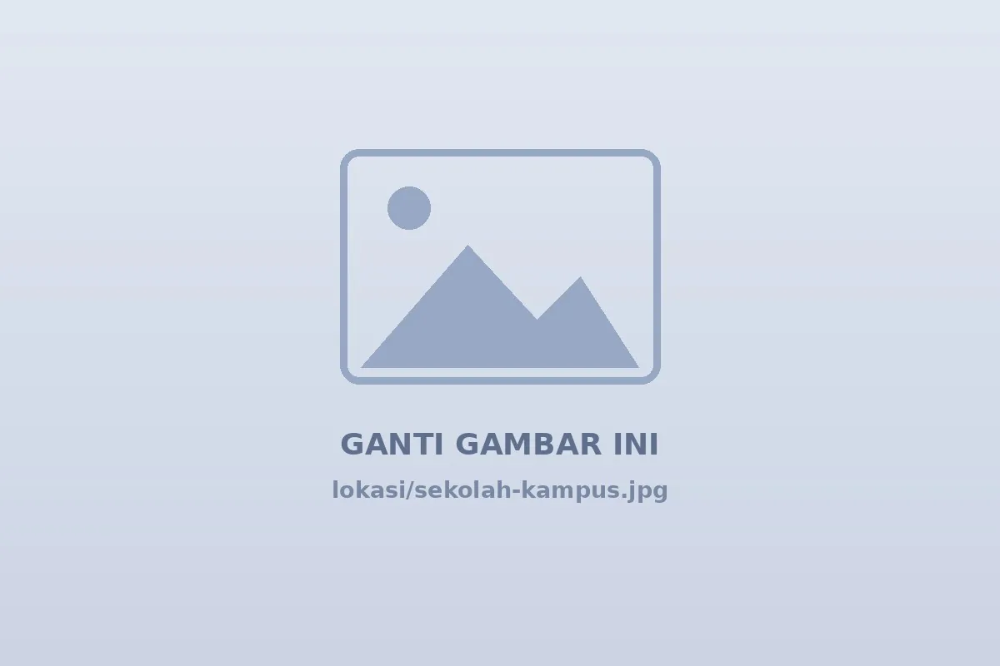
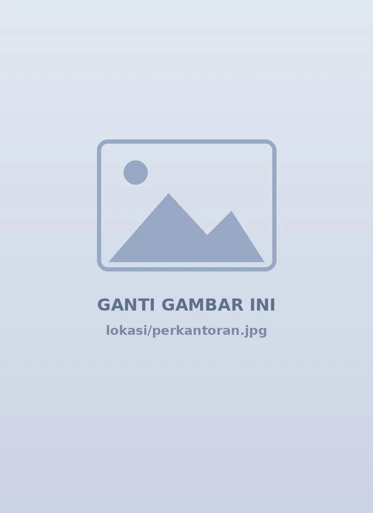
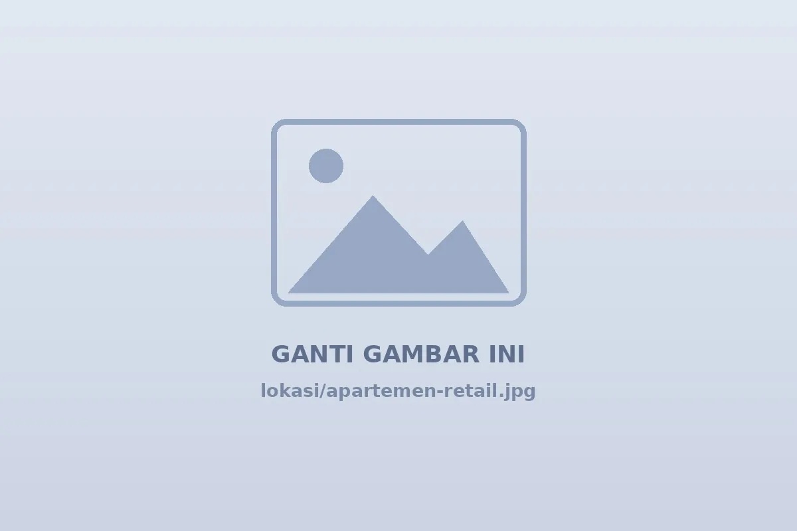

Brand 01 · Steel Locker
Zeco
Locker baja untuk pemakaian intensif: kokoh, rapi, dan siap bekerja keras setiap hari.
- Rangka baja kokoh
- Ventilasi louver
- Susunan modular
Locker baja Zeco dan smart locker Vivorti dari Cahaya Mustika Internesia. Solusi penyimpanan yang aman dan rapi untuk sekolah, kantor, gym, pabrik, dan fasilitas kesehatan sesuai kebutuhan ruang Anda.
Locker baja Zeco dan smart locker Vivorti dalam satu distributor.
Dari locker 1 pintu hingga parcel locker, bisa disusun modular.
Sekolah, kantor, gym, pabrik, fasilitas kesehatan, dan apartemen.
Bantuan memilih konfigurasi dan koordinasi pengiriman proyek.
Tantangan
Setiap sekolah, kantor, gym, dan pabrik punya masalah penyimpanan yang berbeda. Locker Zeco dan Vivorti dirancang untuk menjawab tantangan yang paling sering muncul di lapangan.
Diskusikan Kebutuhan Anda ↗Tas, jaket, dan perlengkapan menumpuk di meja atau lantai sehingga ruangan terlihat berantakan.
Barang pribadi dibiarkan terbuka tanpa tempat simpan yang terkunci.
Tanpa penataan yang tepat, area ganti, koridor, dan ruang kerja cepat terasa sempit.
Kunci fisik mudah hilang, sementara pengguna datang dan pergi sepanjang hari.
Penyimpanan yang tidak seragam menyulitkan perawatan dan membuat area tampak kurang profesional.
Lokasi Penerapan
Locker Zeco dan Vivorti dapat dipasang di sekolah, kantor, gym, pabrik, fasilitas kesehatan, hingga apartemen dan retail.

ZecoRapikan tas, buku, dan perlengkapan siswa dengan susunan modular.

VivortiPenyimpanan pribadi untuk tim hybrid tanpa kunci fisik.
Ruang ganti yang tertib dan nyaman bagi member.
Seragam, helm, dan perlengkapan kerja tertata, kuat untuk pemakaian harian.
Tempat simpan bersih, tertib, dan mudah dirawat untuk staf dan pengunjung.

VivortiParcel locker untuk titip dan ambil paket secara mandiri.
Dua Brand
Kuat dan tahan banting, atau modern dan pintar. Cahaya Mustika Internesia menyediakan keduanya.
Brand 01 · Steel Locker
Locker baja untuk pemakaian intensif: kokoh, rapi, dan siap bekerja keras setiap hari.
Brand 02 · Smart Locker
Locker modern dengan sentuhan desain dan akses digital, cocok untuk ruang publik dan kantor masa kini.
Artikel

Memilih antara locker baja konvensional dan smart locker digital bergantung pada pola pemakaian, anggaran, dan tingkat kontrol akses.
Baca Selengkapnya →
Hitung kebutuhan pintu dengan membedakan pengguna tetap, pengguna bergantian, dan puncak kunjungan.
Baca Selengkapnya →
Perawatan rutin yang sederhana membantu locker tetap berfungsi baik dan terlihat rapi dalam jangka panjang.
Baca Selengkapnya →
Parcel locker memungkinkan paket dititipkan dan diambil secara mandiri tanpa menunggu petugas.
Baca Selengkapnya →FAQ
Zeco menonjolkan locker baja yang kokoh untuk pemakaian intensif. Vivorti menonjolkan desain modern dan akses digital seperti PIN/RFID serta parcel locker.
Bisa. Unit bersifat modular sehingga dapat disusun berderet dan dikombinasikan. Tim kami membantu menentukan konfigurasi yang sesuai.
Klik tombol Mulai Konsultasi pada produk atau hubungi WhatsApp +62 811-3301-819. Sebutkan kebutuhan dan jumlah unit.
Silakan hubungi tim sales untuk menanyakan jangkauan dan estimasi pengiriman ke lokasi Anda.
Bisa. Locker dapat dipasang di sekolah, kantor, gym, pabrik, fasilitas kesehatan, hingga apartemen dan retail. Tim kami membantu menyesuaikan jenis dan jumlah unit dengan ruang Anda.
Locker Zeco memakai kunci mekanis atau gembok yang sederhana dan tahan lama. Locker Vivorti dapat memakai PIN atau kartu RFID sehingga tidak perlu kunci fisik.
Estimasi bergantung pada ketersediaan unit, jumlah pesanan, dan lokasi. Hubungi tim sales melalui WhatsApp untuk jadwal yang sesuai dengan proyek Anda.
BUTUH BANTUAN?
Tim kami siap membantu Anda memilih locker Zeco maupun Vivorti yang sesuai dengan kebutuhan ruang dan jumlah pengguna Anda.